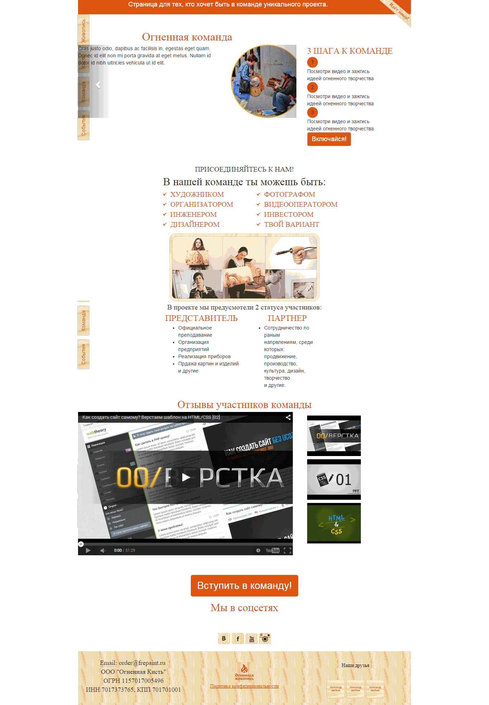
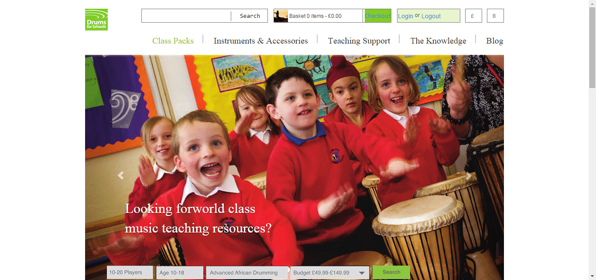
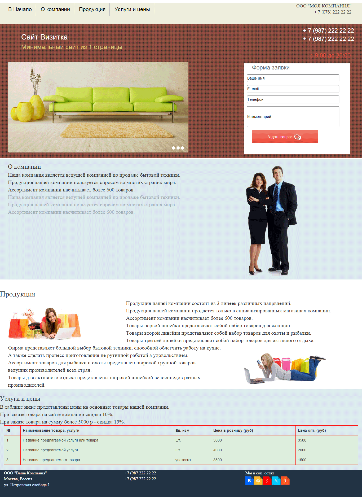
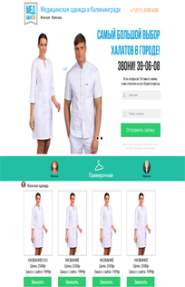
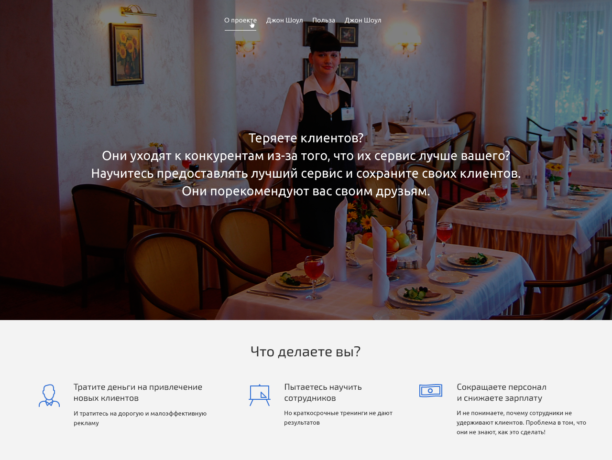

Александр Тупиченков
Здравствуйте, я front end разработчик, подробнее обо мне можно почитать на fl.ru
Портфолио
Сайт огненной команды
Сайт огненной команды. Сайт с примером вертикального меню, с фиксированным положением. Сайт с примером слайдера на css. И отображением видео с ютуба. Для перехода на сайт достаточно кликнуть на картинку.
Сайт фестивалей
Сайт сделан на основе файла pdf, другого у заказчика не было. Сайт с примером слайдера на css. Первые 2 пункта меню имеют выпадающие подменю. Для перехода на сайт достаточно кликнуть на картинку.
Ветеринарный врач на дом

Сайт сделан на основе рисунка формата jpg. Простенький сайт ветеринарной клиники. С возможностью быстрого перехода по разделам сайта и удобного наполнения сайта контентом. Для перехода на сайт достаточно кликнуть на картинку.
Рекламный сайт
Пример резинового сайта сделаного на Bootstrap. Рекламный сайт сделаный исключительно для наполнения портфолио. Для перехода на сайт достаточно кликнуть на картинку.
Сайт медицинских халатов
Пример простого LP сделаного на Bootstrap. Слайдер, форма обратной связи, интерактивная карта. Сайт верстался для установки на WP, куда и был успешно установлен. Для перехода на сайт достаточно кликнуть на картинку.
Сайт энциклопедии Джона Шоул
Пример простого LP сделаного на Bootstrap. В процессе верстки сайт несколько раз переделывался и вот что в конце получилось. Для перехода на сайт достаточно кликнуть на картинку.